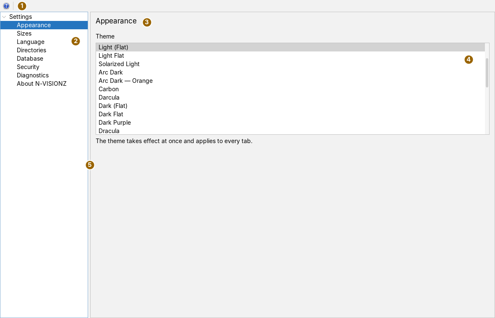
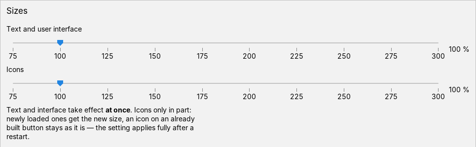
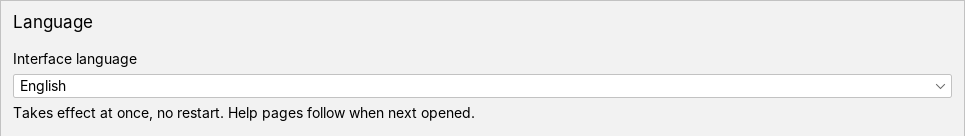
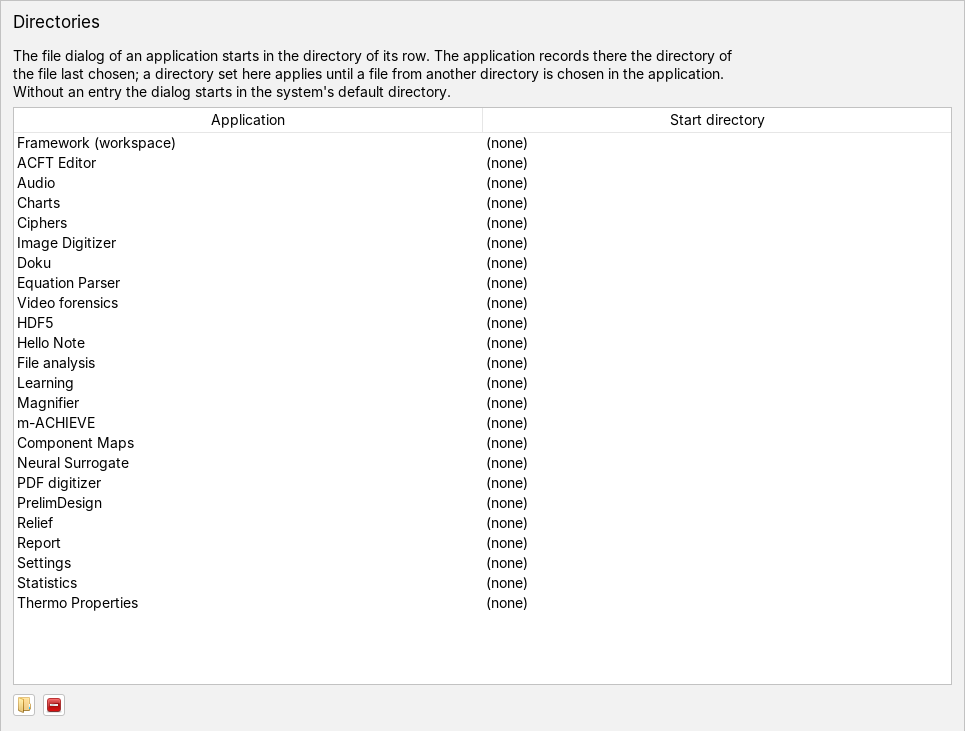
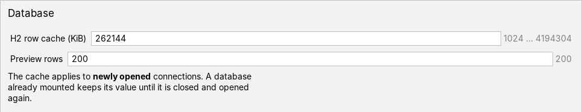
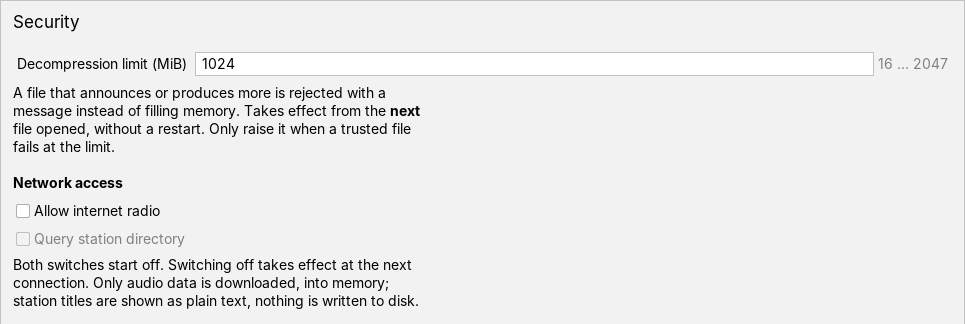
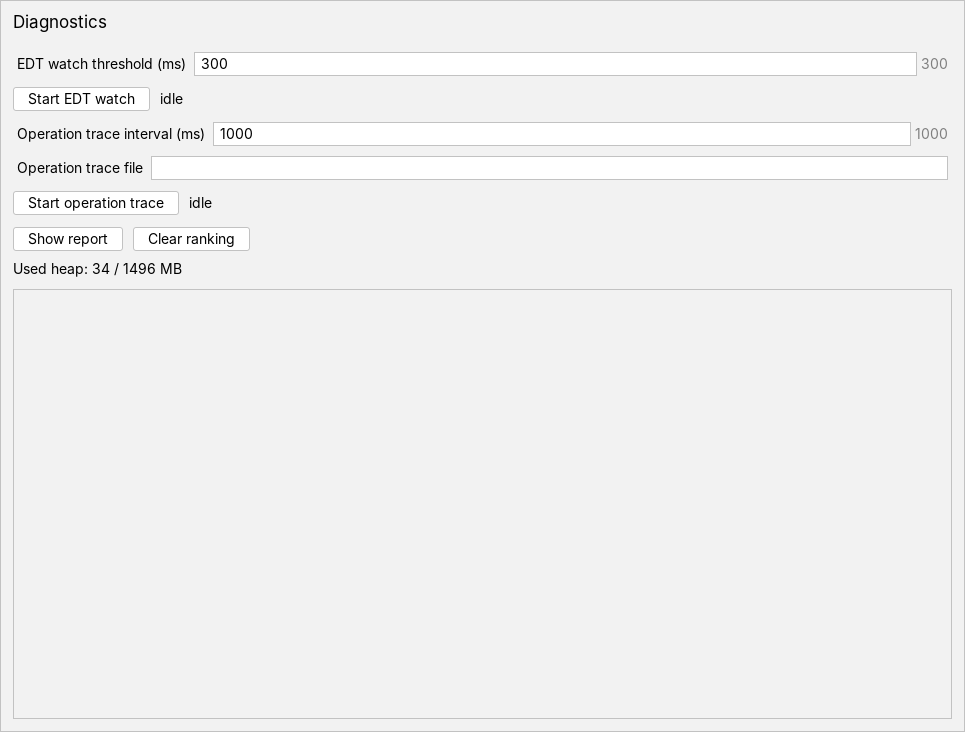

Using the settings
User page, as of 7 October 2026. What each setting of the framework does, where it is stored and when it takes effect: theme, size of text and icons, language, start directories, database, decompression limit and network access, diagnostics. The pictures are screenshots of the app in a freshly created workspace, so all values are at their defaults.
The window
The app is opened in the Apps menu with Settings, with Alt+O or in the View menu with Settings…; if it is already open, the menu entry brings it to the front. Help › About… opens it directly at the About N-VISIONZ section.

On the left, the eight sections are listed under the root Settings; on the right is the selected one. Appearance is selected when the app opens. A click in the tree or the arrow keys change the section; each section reads its state afresh when shown, so it also shows what was changed elsewhere in the meantime. The divider can be moved.
There is no OK and no Apply. Every change takes effect at once and is written to the workspace at once, not on closing. The app can also be opened twice; both tabs show the same.
The bar
| Icon | Tooltip | What happens |
|---|---|---|
 | Help: opens the docs for the settings (like F1) | Brings the docs app to the front and shows this page. Next to the button the message Docs opened then appears, with the address of the online docs in case the launcher has no docs app. |
Entering numbers
The number fields of the Database, Security and Diagnostics sections take a value with Enter or when the field is left; Esc restores the value last taken. To the right of the field the permitted range or the default is shown in grey. Unreadable input is marked and not taken, an empty field changes nothing. If a number lies outside the range, the nearest limit applies and the field then shows that value. Comma and point are both accepted as decimal separator; the number is rounded. The explanation of each field is in the tooltip of its label.
Appearance
The list holds all 32 themes of the framework, light ones before dark ones, alphabetical within each group; the current one is selected. A click on another theme switches at once, for all windows and tabs, and writes it to theme.properties. If a theme cannot be loaded, the previous one stays and nothing is written.
Sizes

- Text and user interface enlarges text and controls in every window. Takes effect as soon as the slider is released; all open windows are rebuilt.
- Icons enlarges the icons in menus and toolbars. Only partly at once: icons loaded afterwards come in the new size, an icon on an already built button stays as it is. The setting applies fully after a restart.
On release both values are written together to settings.properties. The number on the right follows the slider while dragging.
Language

The choices are Deutsch, English, Français, Español and Italiano. The choice takes effect at once, without a restart: menus and open tabs are relabelled in the new language, the settings themselves too. Help pages follow when next opened. It is stored in settings.properties; a new workspace starts in English.
Directories

Each app has its own start directory for its file dialogs. The table lists all registered apps, including those that have never opened a file, and in the first row the Framework (workspace) for file dialogs outside an app tab.
| Icon | Tooltip | What happens |
|---|---|---|
 | Choose the start directory of the selected row … | Opens a directory dialog that starts in the row's current directory; the chosen directory is entered. |
 | Clear the entry of the selected row | Removes the entry; the row shows (none) again. |
Both buttons act on the selected row; with none selected nothing happens. The entry is also the directory the app records: if a file from another directory is chosen in the app, that directory replaces the entry. Without an entry the file dialog starts in the system's default directory. Every change is written to verzeichnisse.properties, including when the app itself records a new directory; a directory that no longer exists at the next start is dropped.
Database

- H2 row cache (KiB), 1024 to 4194304, default 262144 (256 MiB): how much memory the embedded database keeps for rows. Applies to newly opened connections; a database already mounted keeps its value until it is closed and opened again.
- Preview rows, 1 to 1000000, default 200: how many rows the load panel of a database table reads for its preview. Applies to chart tabs opened afterwards.
Security

Decompression limit (MiB), 16 to 2047, default 1024 (1 GiB): how large the decompressed data from a file may become at most, per decompression call. It applies to all compression methods of the framework and so to every file format built on them, and protects against files that would fill memory when unpacked. A file that announces or produces more is rejected with a message. The limit takes effect from the next file opened, without a restart. Only raise it when a trusted file fails at the limit.
If the program was started with the option -Denvisionz.entpacken.max, that option takes precedence. The section then states below the note which limit actually applies until the next start without the option.
Network access: Allow internet radio lets apps play radio streams from the internet, only via http and https and not to targets in your own network. Query station directory allows the station search to query a public station directory; without this switch only your own addresses are available. The directory can only be chosen once the radio is allowed. Both switches start off. The apps read them again before every connection, so switching off takes effect at the next connection. Only audio data is downloaded, into memory.
Certificates for the radio: if a virus scanner or firewall inspects encrypted connections, it presents its own certificate, which Java does not know, and the radio reports an unknown issuer. The presented certificate then appears here with name, issuer, validity and SHA-256 fingerprint. The tick approves it, the cross discards it. Approved certificates are listed below and can be removed again with the minus. An approval applies only to the radio, not to other connections and not to Java as a whole; compare the fingerprint with the security software's certificate first.
Diagnostics

Two instruments for tracking down stalls can be switched on and off here while the program runs:
- EDT watch reports when the event thread of the user interface hangs longer than the EDT watch threshold (ms); 20 to 60000, default 300, roughly where a stall becomes noticeable. Start EDT watch / Stop EDT watch switches it, next to it running or idle. If the operation trace is already running, the watch writes into its file, otherwise to standard output, which goes nowhere in the built executable. So start the operation trace first, then the watch.
- Operation trace writes operation steps, messages and the used heap to a file: the heap at each Operation trace interval (ms) (50 to 600000, default 1000); every 15th tick also collects garbage. An empty Operation trace file means
logs/bedienspur.login the workspace. On start the report area says where it writes, and next to the button running → with the file; on stop its report appears in the area.
Show report shows the ranking of the longest hangs of the EDT watch, with the operation trace running also its report. Clear ranking resets the ranking and empties the area. Used heap gives the used and the maximum available memory in MB; the value is refreshed when the section is shown and after each button.
Threshold, interval and file are stored in rahmen.properties and apply at the next start of the respective instrument; a running one keeps its values. Whether the instruments are running is not stored: after a restart both are idle, unless switched on with the start options -Dedtwache or -Dbedienspur.
About N-VISIONZ
The last section sets nothing. It shows the program's information text: short description, runtime, copyright notice and the libraries used with their licences.
What is stored
Everything is kept as properties files in the workspace directory, for the full launcher without other instructions .envisionz in the user's home directory. The app has no store of its own and saves no state when the workspace is saved. If a file is missing, the defaults apply.
| Setting | File, key | Default | Takes effect |
|---|---|---|---|
| Theme | theme.properties, theme.id | Arc | at once |
| Text and user interface | settings.properties, ui.scale | 100 % | at once |
| Icons | settings.properties, icon.scale | 100 % | newly loaded icons at once, fully after restart |
| Language | settings.properties, ui.locale | English | at once |
| Start directories | verzeichnisse.properties, one key per app | none | at the next file dialog |
| H2 row cache | rahmen.properties, h2.cacheKb | 262144 KiB | newly opened connections |
| Preview rows | rahmen.properties, h2.vorschauZeilen | 200 | newly opened chart tabs |
| Decompression limit | rahmen.properties, sicherheit.entpackenMaxMb | 1024 MiB | next decompression |
| Internet radio, station directory | rahmen.properties, netz.radio, netz.senderverzeichnis | off | next connection |
| Certificates for the radio | radio-vertrauen.pem (approved), radio-vorgelegt.pem (awaiting decision) | none | next connection |
| EDT watch threshold | rahmen.properties, diag.edtwache.schwelle | 300 ms | next start of the watch |
| Operation trace interval, file | rahmen.properties, diag.bedienspur.takt, diag.bedienspur.datei | 1000 ms, empty | next start of the trace |
Keyboard and mouse
Alt+O opens the app. In the tree the arrow keys change the section, which is shown at once. In the number fields Enter takes the value, Esc discards it, Tab takes it and moves on. The size sliders take effect when the mouse is released. The app has no other shortcuts.
Limits
- French, Spanish and Italian can be selected, but the interface only has German and English texts. With these three the base texts of the modules appear, mostly German.
- The icon size takes full effect only after a restart.
- Diagnostics cannot measure program start-up; the start options remain for that. The memory ceiling of the built executable is fixed at build time and is only displayed here.
- The directory chooser of the Directories section is a separate system dialog window.
- Settings of individual apps are in the apps themselves, not here.
What the app can do and what it builds on is described in the overview.
Icons: Fugue Icons by Yusuke Kamiyamane, licence CC BY 3.0.